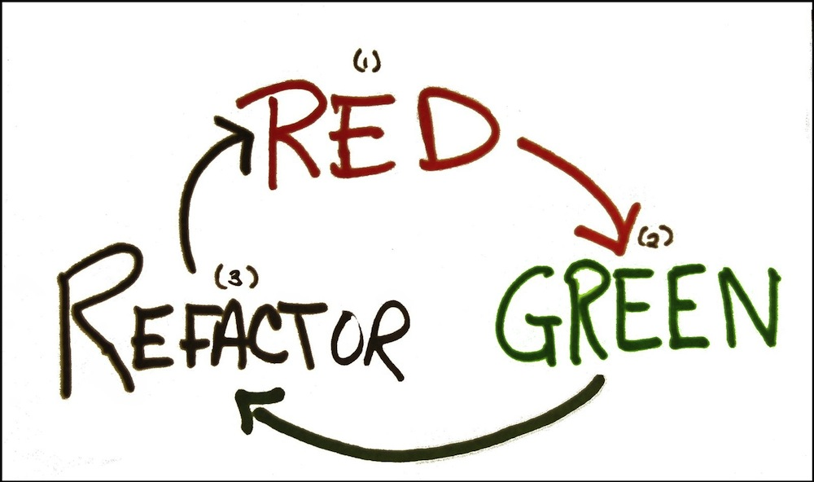

TDD
Test-Driven Development
#TDD ?!

La mission ?
Du code propre qui fonctionne...
… maintenant!
“Du code non testé est du code qui ne fonctionne pas.”
Kent Beck
C'est pour qui ?

les développeurs \o/
Un seul outil :

les tests unitaires
Make them first
- Fast
- Isolated
- Repeatble
- Self-verifying
- Timely
3 règles
Ne pas écrire de code de production si ce n'est pour faire passer un test qui échoue.
Ecrire juste assez de code de test pour démontrer un échec.
Ecrire juste assez de code de production pour faire passer un test.
Un cycle rapide
Refactoring

Une bonne conception ne vient pas en premier...

elle apparaît
Par où commencer?

Vous connaissez le Mölkky?
Encore un jeu de quilles!
Des règles simples
- 1 quille tombée => score += quille
- n quilles tombées => score += n
- 50 points => victoire \o/
- Score > 50 => score = 25 :(